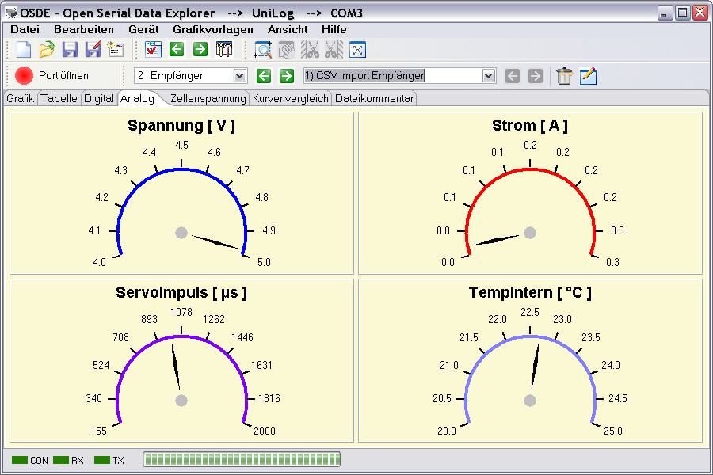

Das Analogfenster zeigt, so, wie für das Digitalfenster, gewählten Messwerte, an. Die Farbe der Skalengrundlinie entspricht der eingestellten Farbe für die Messkurve. Damit die Anzeige eine hohe Auflösung hat und trotzdem ruhig wirkt, werden für die Skalenendwerte gerundete Werte verwendet. Die Rundung entspricht der Einstellung für Runden der Skalen im Grafikfenster.

Hinweis : Es werden alle aktiven und sichtbaren Messwerte, ausgewählt über den Kurvenselektor, mit konfigurierter Nachkommastelle dargestellt.